Add Recipients and Initiate an ACH Transfer
Learn how to securely add a new recipient and process an ACH transfer within Online Banking. This guide provides a step-by-step walkthrough to ensure your financial transactions are completed accurately and efficiently.
1
Click "Business Banking"

2
Click " ACH Transfer"

3
Select whether you are sending money or receiving money

4
Click inside the blue box to select the source account

5
Select the source business account

6
Click inside the next blue box to select the external recipient

7
Select a recipient or select "New Recipient" if one needs to be added
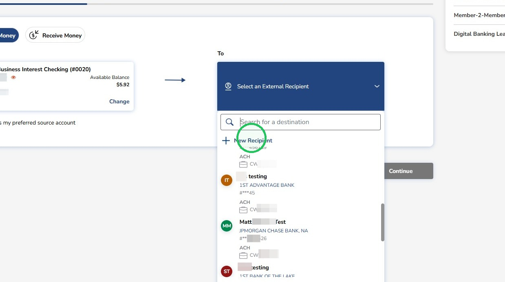
8
Open the recipient selector to change to the Business account
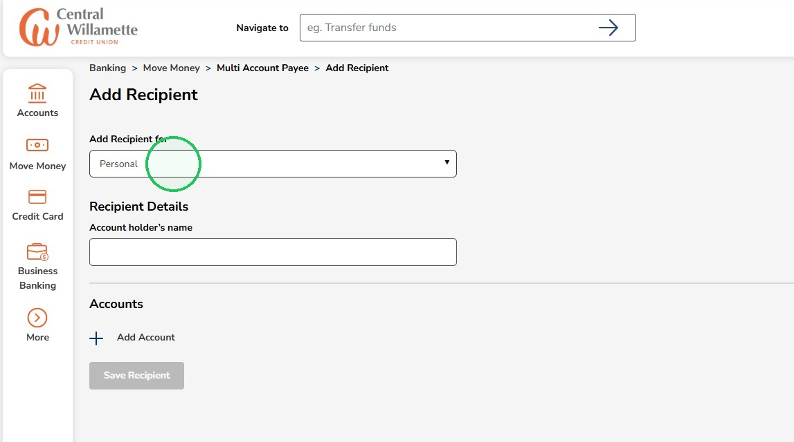
9
Select the Business account the recipient is being added to
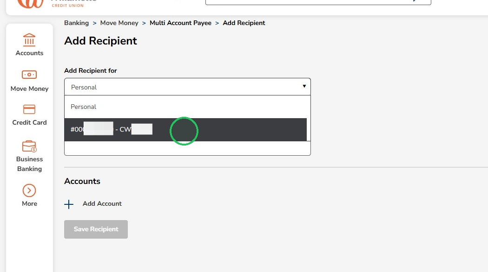
10
Enter the recipient name in the Account holder’s name field

11
Click Add Account
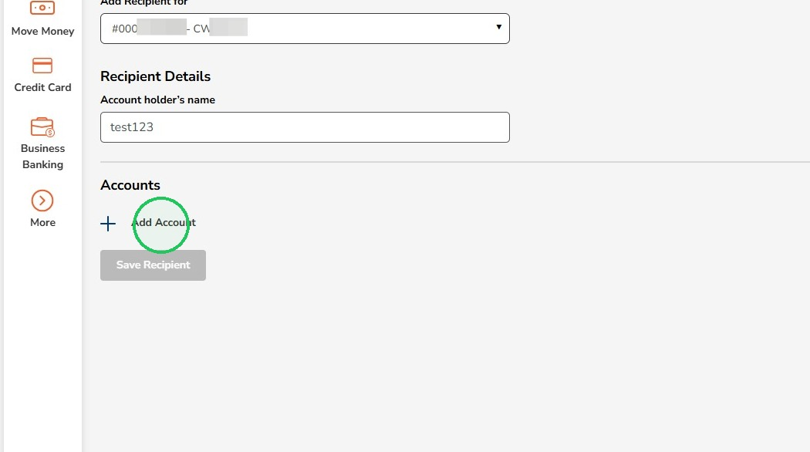
12
Open the Payment Type selector
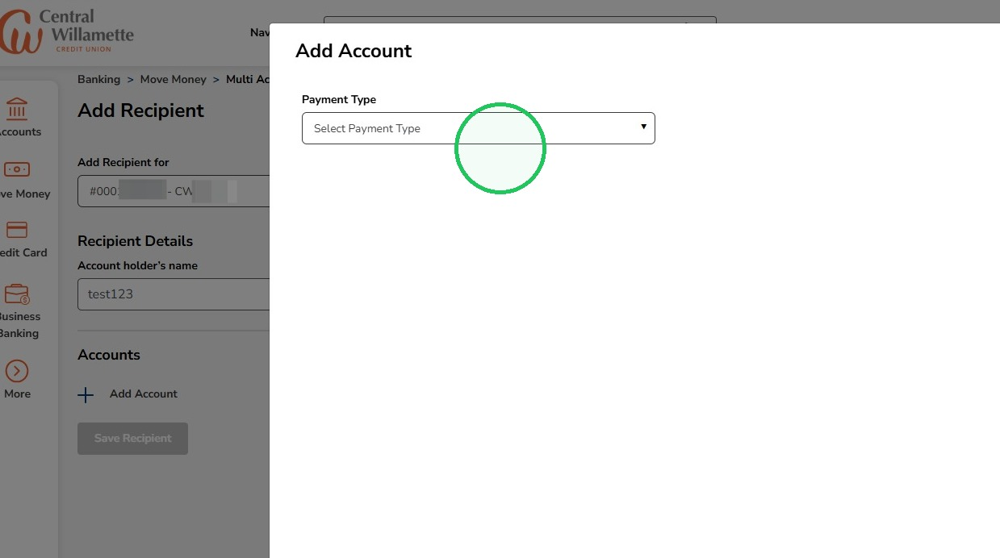
13
Select ACH as the payment type
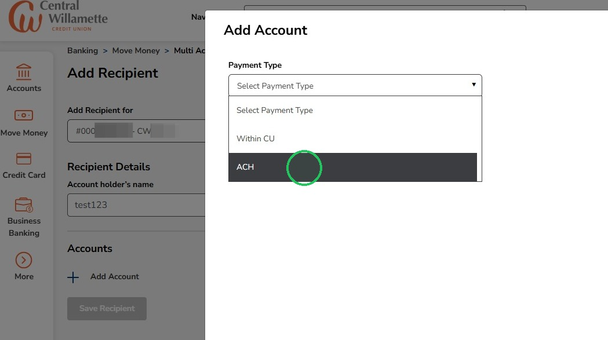
14
Enter the recipient information
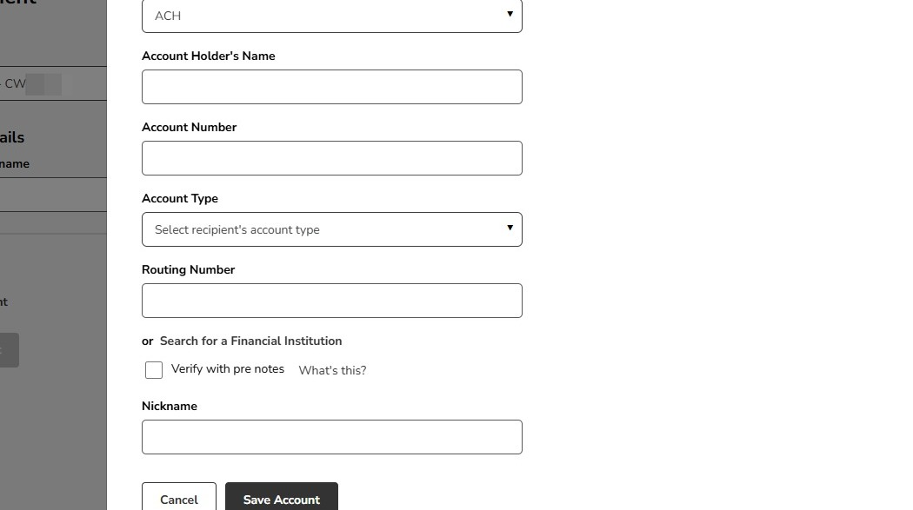
15
Clicking here lets you search for the Financial Institution's routing number if you do not know it

16
Enter the financial institution name

17
Select the financial institution

18
Check the box if the new recipient should be verified with pre notes

Verifying with pre-notes sends a $0 test entry to verify the recipient’s routing and account number before sending a payment. No funds are transferred. Choosing this option will delay the first payment by 1-2 business days while the verification is completed.
19
Enter a nickname for the new recipient then click "Save Account"
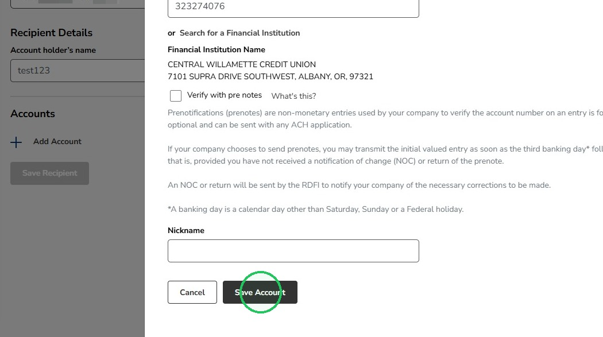
20
Click "Save Recipient"
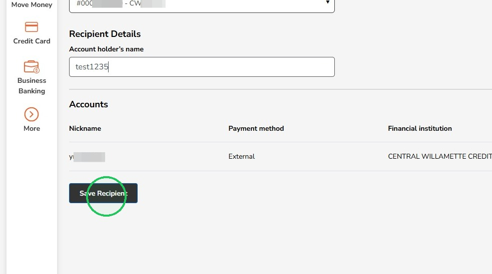
21
A green message will appear at the top indicating the new recipient was added successfully

22
Click "Transfer Funds" to transfer to the new recipient
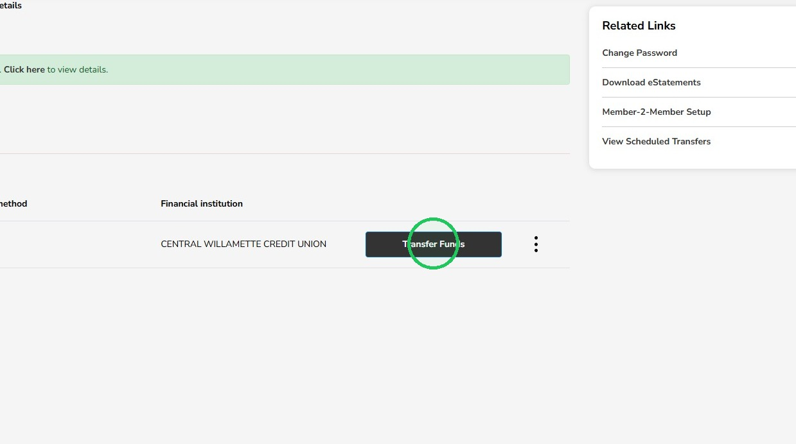
23
Clicking "Transfer Funds" will bring you right back to the ACH Transfer page with the "To" field already selected
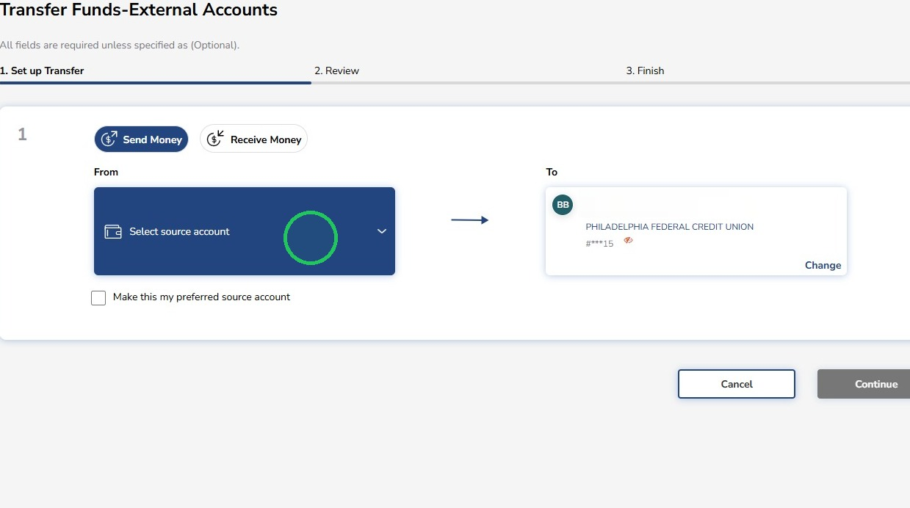
24
Enter the transfer amount
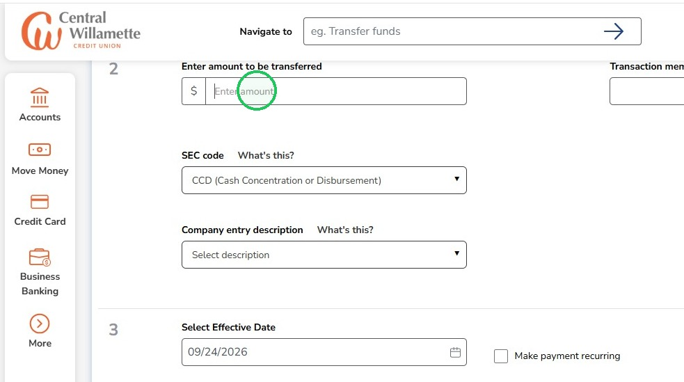
25
Transaction memo is optional
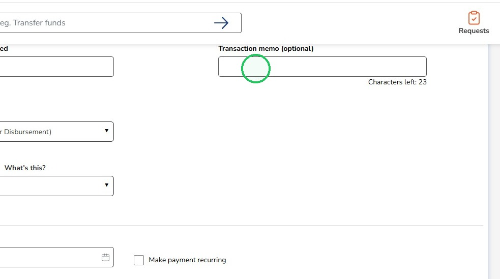
26
Select the SEC code
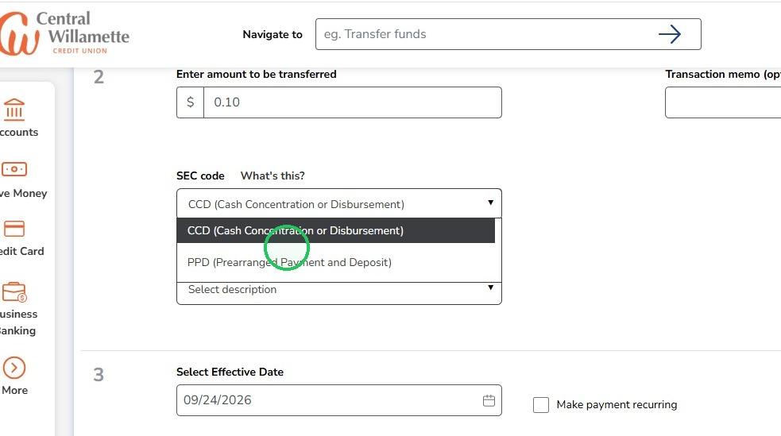
Select PPD when the recipient is an individual and the payment is being sent to their personal checking or savings account.
Select CCD when the recipient is a business, company, or other organization and the payment is being sent to its business bank account.
Select CCD when the recipient is a business, company, or other organization and the payment is being sent to its business bank account.
27
Select the Company entry description
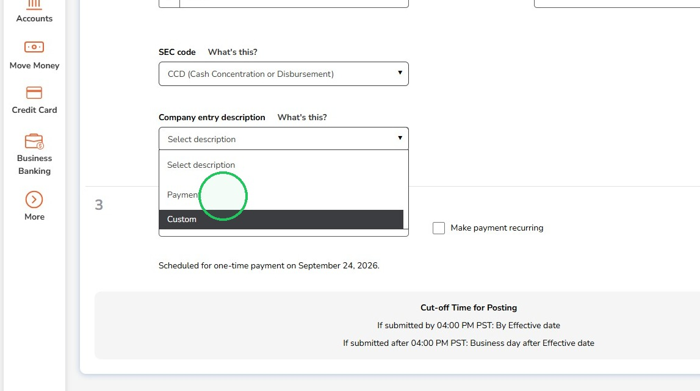
Payment: Select this option for a general ACH payment. The recipient may see “Payment” as the description of the transaction in their account history.
Custom: Select this option to create a short description for the ACH payment, such as “Invoice 1234,” “Rent,” or “Vendor Pay.” Use a clear description that will help the recipient recognize the transaction.
Custom: Select this option to create a short description for the ACH payment, such as “Invoice 1234,” “Rent,” or “Vendor Pay.” Use a clear description that will help the recipient recognize the transaction.
28
Select the date for the transfer to be sent
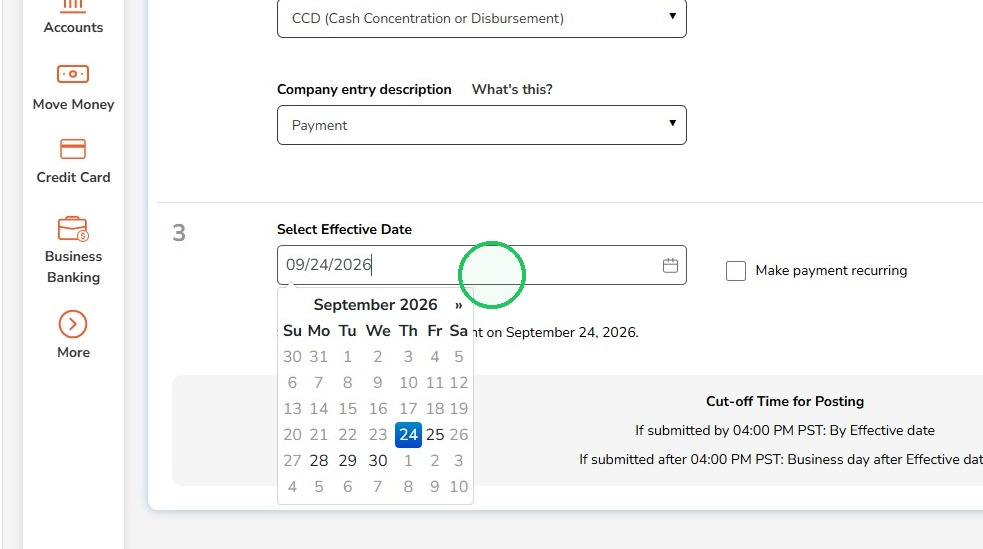
Any transfers placed before 4:00 PM PST will arrive on the Effective Date and transfers placed after 4:00 PM PST will arrive the business day after the Effective Date
29
Check this box if you would like to make the transfer recurring

30
Click "Continue"
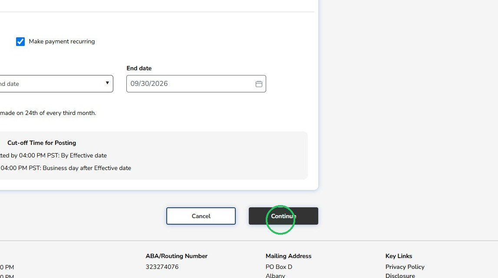
31
Review the transfer information then click "Confirm Transfer"
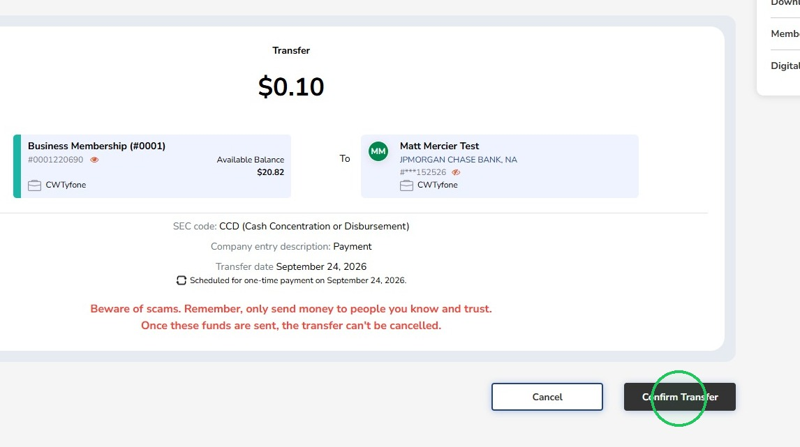
32
Choose a one-time passcode delivery method to finish the transfer

33
Submit the one-time passcode and click "Submit" to finish the process
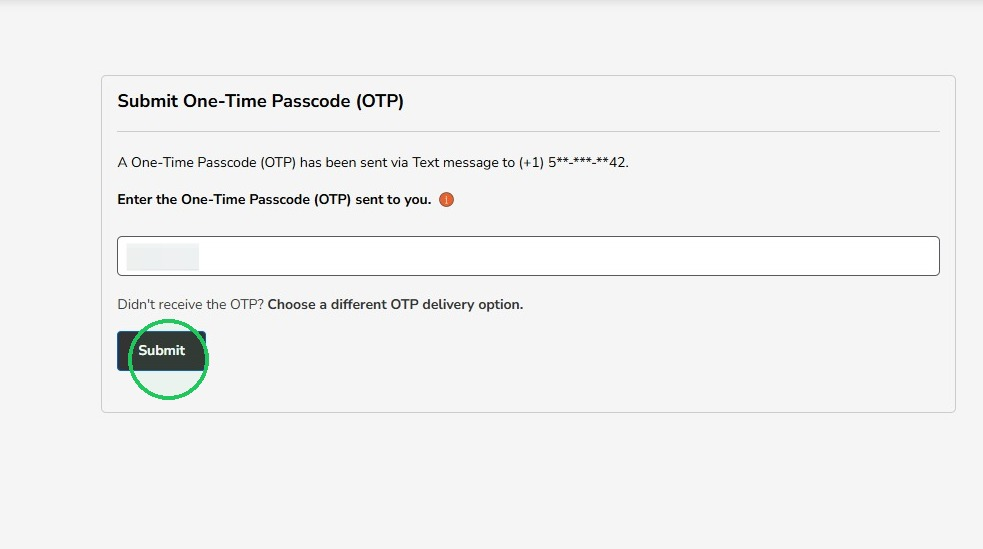
Any transfers placed before 4:00 PM PST will arrive on the Effective Date and transfers placed after 4:00 PM PST will arrive the business day after the Effective Date